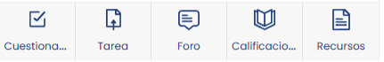
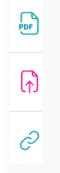
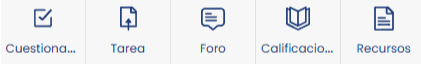
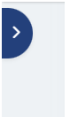

📄 Objetivo
Analizar una interfaz web real para clasificar sus elementos visuales según su propósito funcional, diferenciando entre contenido informativo, decorativo, interactivo y de identidad.
🔍 Clasificación de Elementos Visuales
1. Informativa: Opciones de Asignatura
Estas imágenes informan directamente sobre las diferentes opciones o módulos disponibles dentro de la asignatura.
2. Informativa: Logotipos Institucionales
Cumplen con la normativa legal de informar visualmente sobre qué entidad financia el servicio (fondos europeos, ministerios, etc.).
3. Informativa: Tipos de Archivo
Iconografía que anticipa al usuario el tipo de archivo (PDF, ZIP, DOCX) que va a abrir o descargar antes de leer el texto descriptivo.
4. Decorativa: Estética del Formulario
Suaviza el aspecto técnico del formulario de acceso aportando estética, sin añadir datos relevantes para la tarea del usuario.
5. Interactiva: Botones de Navegación
Funcionan como disparadores de acción o botones de navegación rápida para redirigir a la sección seleccionada.
6. Interactiva: Flechas de Control
Elementos como flechas que permiten al usuario interactuar con la interfaz para abrir o cerrar el índice de contenidos.
7. Identidad Visual: Branding del Software
Reconoce la marca registrada del software (ej. Moodle, WordPress, Canvas) sobre el que se construye la plataforma, reforzando la confianza técnica.